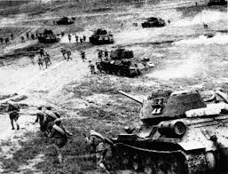

Курска битка је почела 5. јула 1943. као последња велика немачка офанзива на Источном фронту. Након пораза код Стаљинграда, Хитлер је имао за циљ да поврати иницијативу покретањем операције Цитадела, циљајући на Курску избочину у совјетским линијама.
Битка је почела масовном немачком офанзивом која је укључивала највећу концентрацију тенкова у историји. Немци су имали за циљ да опколе совјетске снаге у истуреном делу нападајући са севера и југа. Међутим, Совјети су, унапред упозорени обавештајним подацима, утврдили то подручје широким одбрамбеним линијама, минским пољима и противтенковским положајима.
Почетни немачки напади, који су укључивали тенкове Тигар и Пантер, донели су неке успехе, али су наишли на жесток отпор. Северни напад Девете армије генерала Модела и јужни напад Четврте тенковске армије генерала Хота суочили су се са одлучном совјетском одбраном и контранападима.
Кључни тренутак догодио се код Прохоровке 12. јула, где се одиграла једна од највећих тенковских битака у историји. Совјетске снаге под командом генерала Ротмистрова сукобиле су се са немачким II СС Панцер корпусом. Упркос великим губицима, Совјети су успели да зауставе немачко напредовање.
До средине јула Немци су исцрпили своје офанзивне могућности. Истовремено, Совјети су покренули контраофанзиву, операцију Кутузов и операцију Полководец Румјанцев, циљајући немачке бокове. Црвена армија је брзо освајала земљу, потискујући Немце назад и враћајући територију.
Битка код Курска завршена је одлучном совјетском победом, означивши крај великих немачких офанзива на Источном фронту. Црвена армија је преузела стратешку иницијативу, што је довело до низа успешних офанзива које су на крају гурнуле немачке снаге назад у Берлин.
